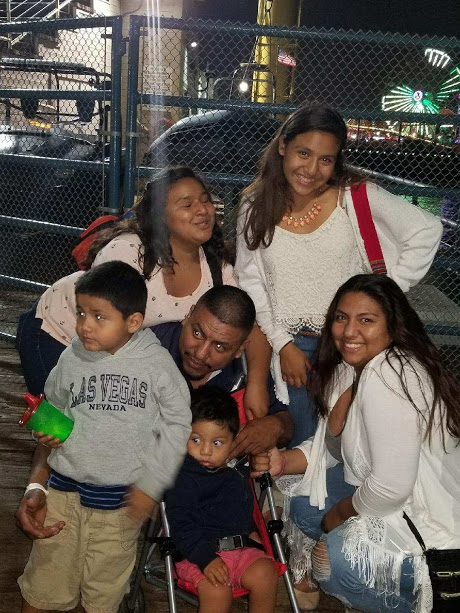

S
my cs class
Home
Portfolio
All About Me
This a Page about me!

Hi my name is Desteny Duque. I am a senior in high school.I love my family as showen in the picture. That is my crazy family.
My family probably the only thing that i cant live without other than air. I am also a cross country runner. Yes i run for fun.
Running to me is the most claiming thing in the world. Your mind blanks out and you forget about everything around you. That
is the best part about running. You get to think to yourself. That is why i run to be free to think. I also play soccer and
im in track and field.So i guess im really sporty. My sister is off to university. She got a sholarship to go to
iowa state. We have have a love hate realtionship.But overall i really enjoy being able to have a sister who would listen to
me and sometimes wouldn"t tell anyone.The family memeber that i love the most are my two brother. they are my everything.
My four year old brother osmin comes running into my room on the weekends yelling on the top of his lungs saying "WAKE UP, IT TWO MINTUES"
My one year old brother is in love with cows or as he calls them "vacas", which is the same thing but in spanish. And last but not least the
craziest one form my family my little siter. She the weridest person on earth but she super funny. HSe makes these faces that you aren't
but then sge sares at you which makes you laugh. In conclusion of me and my crazy family , is that my family to me is more important
that taking this website and just talk about myself.